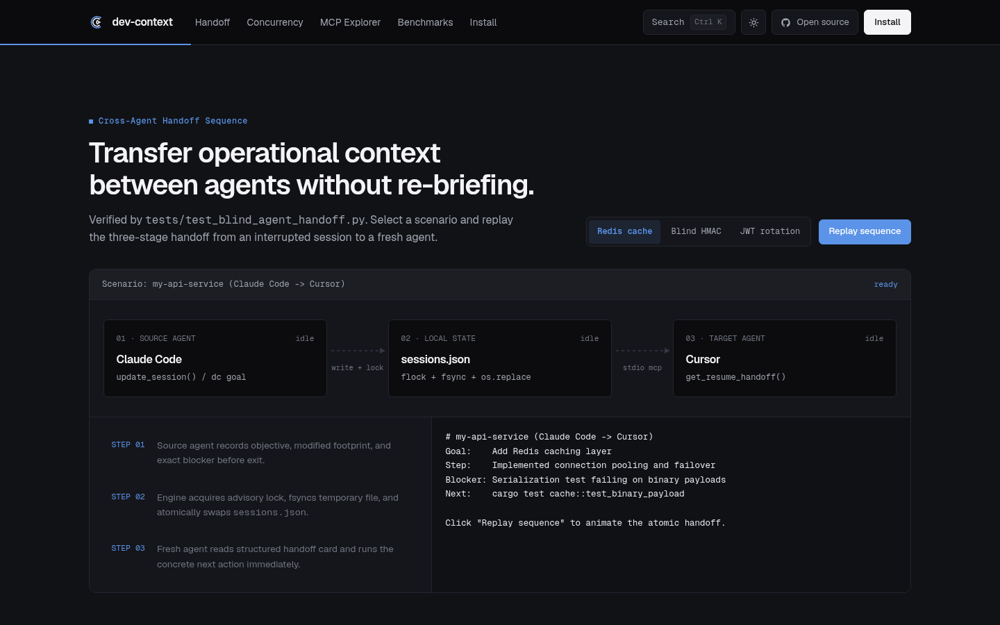
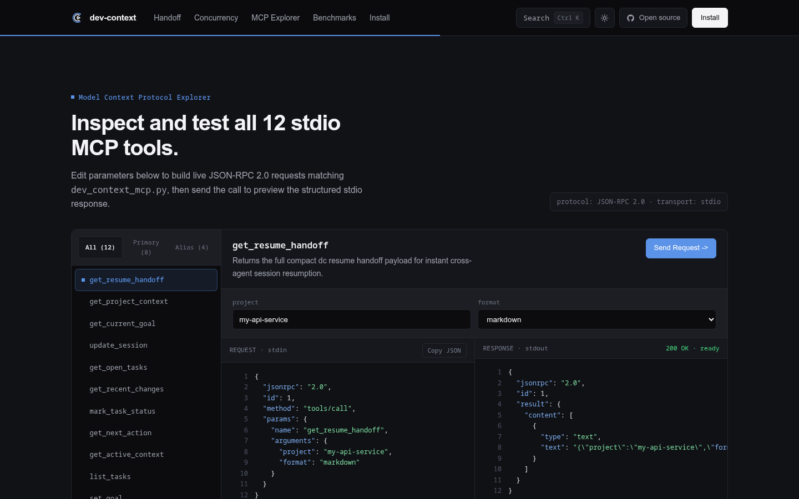
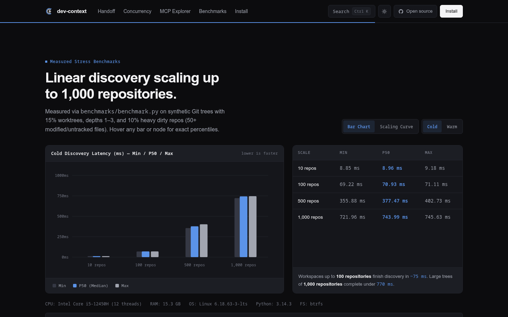

zero-cold-start session handoff for coding agents.

switching repositories or resuming after a context limit hits the same wall every time: the next coding agent opens on a blank prompt with zero memory of the active goal, uncommitted diff footprint, current blocker, or exact next command.
dev-context (dc) fixes the agent cold-start penalty with a pure Python standard-library engine. it scans your workspace in parallel, persists session state and 4-hex-ID sprint queues on disk, and exposes the whole context layer over both CLI and a built-in JSON-RPC 2.0 stdio MCP server.
cross-agent session handoff
when Agent A finishes or gets interrupted, it updates local session memory via dc goal or MCP update_session. when Agent B starts in Antigravity, Claude Code, Cursor, or Codex, calling dc resume or get_resume_handoff returns a structured operational handoff card with exact diff footprints, blockers, and the next concrete action — verified end-to-end by tests/test_blind_agent_handoff.py.

zero-dependency stdio mcp server
dev_context_mcp.py implements JSON-RPC 2.0 over stdio with zero third-party packages. it exposes 8 primary tools (get_project_context, get_current_goal, update_session, get_open_tasks, get_recent_changes, mark_task_status, get_next_action, get_resume_handoff) plus 4 legacy aliases for backward compatibility.

concurrency & measured scaling
1. Atomic State & File Locking: both sessions.json and ROADMAP.md use POSIX fcntl.flock on Linux/macOS and msvcrt.locking on Windows, writing through temp files with fsync + os.replace and self-healing corrupted JSON backups automatically.
2. Linear Workspace Discovery: benchmarked via benchmarks/benchmark.py on synthetic trees with 15% worktrees and 10% heavy dirty repos — 8.96ms P50 for 10 repos, 70.93ms P50 for 100 repos, 377.47ms P50 for 500 repos, and 743.99ms P50 for 1,000 repos, with subprocess timeouts isolating hanging git tasks (45/45 resilient discovery in 0.04s).
